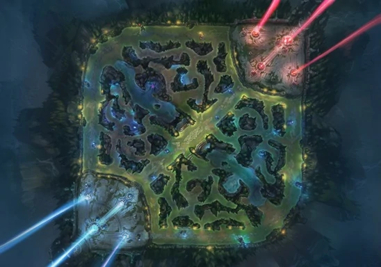
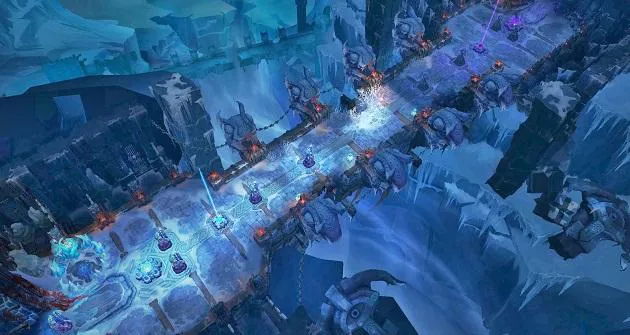
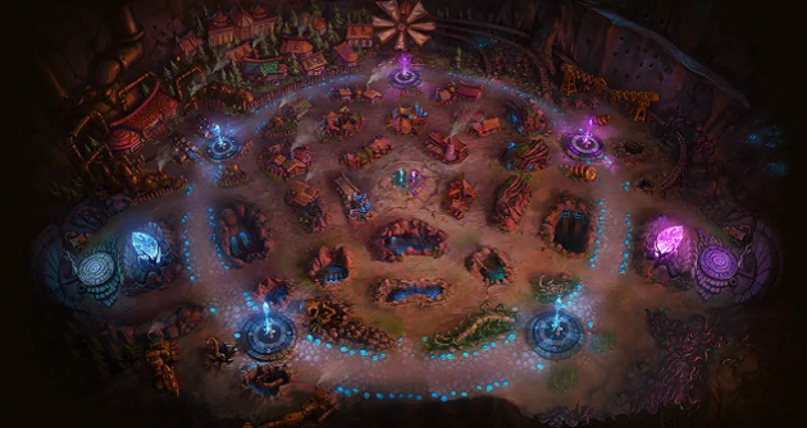

League of Legends tiene de lugar de mundo ficticio de Runaterra. Todos los campeones son una coleccion de personajes, héroes y villanos con una variedad de historias.
La historiade Runtaterra se puede dividir en dos: La original que seria la historia comprendida entre 2009 a 2014 hasta le reinvencíón de todo el "lore" de LoL que es la actualmente vigente.
-Grieta del Invocador:Mapa mas popular consiste en un 5v5 con 3 carilles:superior(top), medio(mid), inferior(bot) y en medio de ellos la jungla(jg).
Como objetivo principal es el destruir el nexo enemigo con ayuda de los objetivos secundarios como: torretas, dragones,heraldo,barón Nashor,monstruos de la juega,macro y micro juego, etc.
-Abismo de los Lamentos(ARAM):Partida 5v5, con la diferencia con la grieta del invocador que solo exite un carril y sin jungla.
Un estrecho carril con torretas y un inhibidor y un nexo por equipo. Nuevamente con el objetivo de destruirlo para ganar. Con campeones al azar. Centrado mucho en las peleas de equipo
-Cicatriz de Cristal:Se uso el modo Dominiom, un modo de juego descartado
Basicamente un juego de zona caliente donde se conseguia puntos mediante el control de puntos estrategicos en fuentes, capturando, protegiendo, y poseyendo estas fuentes que entregaban puntos de forma pasiva. El que tenía mas puntos ganaba.
Dentro de los modos de Juego tenemos:
-Turorial: Explica las bases del juego
-Cooperativo vs IA.: Jugadores contra bots, ideal para principiantes
-Entrenamiento: Habilidades sobre el mapa desbloqueadas para que el jugador pueda probar el juego sin restricciones, usado para entrenar mecánicas.
-Personalizado: Partidas personalizables
-Clasificatorias: Para jugadores superior o igual a nivel 30,Partidas mas competitivas con rangos y distinción entre la habilidad y estrategia del jugador.
-Normales: Disponibles desde nivel 3, partidas usadas para divertirse, o jugar de una manera mas tranquila.
-Especiales: En ciertas épocas del año, se habilitan distintos modos de juego innovadores con distintas rglas, pensado para divertirse.Llegan a ser mas caóticas que todos los modos.
Wild Rift es el juego League of Legends disponible para móbiles o smartphones, que cuentan con leves e importantes diferencias entre la versión de pc. Pero manteniendo la esencia del juego.